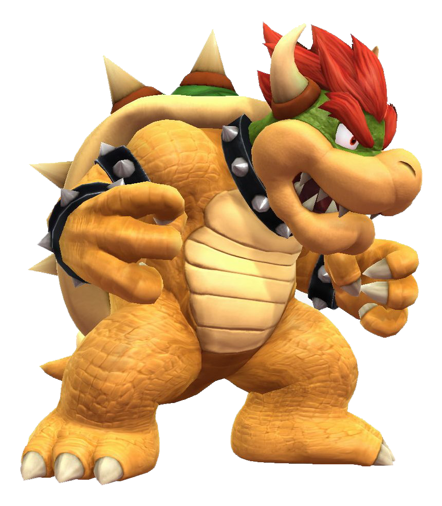

O Rei Bowser Koopa, conhecido no Japão como Koopa (クッパ Kuppa?), ou somente Bowser,[1] é o principal vilão do universo Mario, consagrada franquia da Nintendo, e também um dos mais famosos vilões da empresa. Ele é o rei de todos os Koopas (uma espécie similar a tartarugas super desenvolvidas) e também o líder da organização criminosa conhecida como Koopa Troop, uma organização composta por diversas criaturas do Reino dos Koopas. Geralmente, Koopa rapta a Princesa Peach, e o Mario corre para salvá-la. Koopa apareceu nos games pela primeira vez em Super Mario Bros. e continuou como arqui-inimigo de Mario desde então. Suas aparições não foram, entretanto, apenas como vilão. Em alguns jogos Rei Koopa faz o papel humorístico (como em Paper Mario: The Thousand-Year Door) ou até como parte da equipe (como Super Mario RPG: Legend of the Seven Stars[2][3][4] e Super Mario Kart). O objetivo de Bowser ao raptar a princesa Peach ainda não foi esclarecido, mas alguns jogos afirmam que Bowser tem uma queda por Peach, como em Paper Mario, na cena em que Peach lê o diário de Koopa: "Eu espero que Peach goste de mim." e em outra cena do Paper Mario existe uma sequência de perguntas e uma delas é "What's the name of the person who King Bowser really loves?"(Qual é o nome da pessoa que o Rei Koopa realmente ama?) e a resposta é "Peach".


Bownser Koopa
